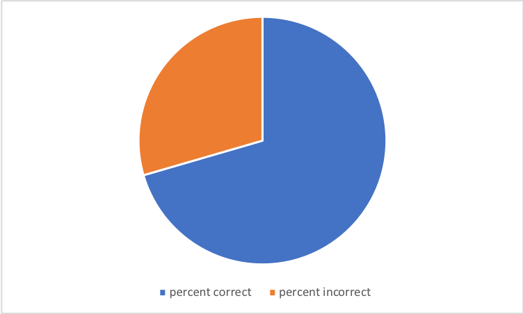
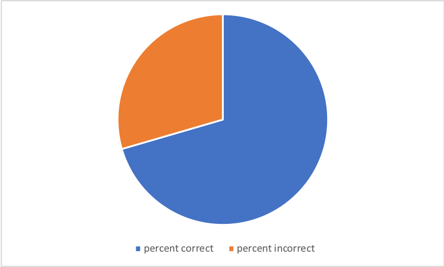
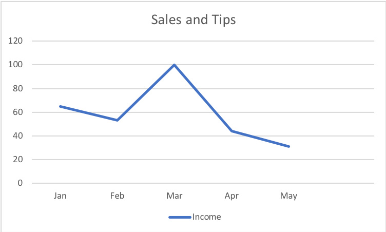
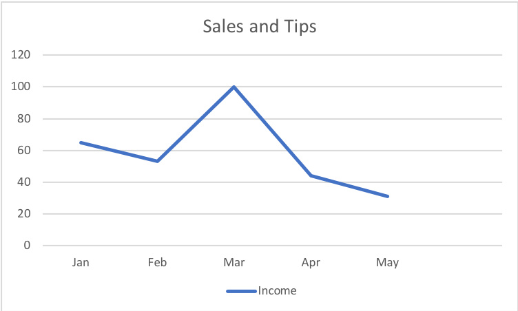

Visualization is effective because it allows people to grasp the truth in data because they can see it. Without being able to actually see data, the human brain plays tricks on peoples initial thoughts on raw data. The example Cairo shares provides the responses of students to test scores. In this example, the students are upset when the class test average is a 72 out of 100(left) while their moods improve when the average is a 96 out of 137(right). This shows the tricks raw numbers can play on the human mind wihtout visualizations because the ladder score was actually a lower percentage than the first. This problem can be applied to all raw data based on proportion and can be easily solved just by putting the data into a certain visualization.
 

When you see the scores 70 out of 100 and 129 out of 183 which one do you automatically think is bigger? To the naked eye the larger number appears like it would have the bigger percentage, but the pie charts above show that they have nearly the same value. This supports Cairo statement that unvisualized data can be ineffective in portraying accurate representations of the point you are trying to make.
The first suggestion for encoding data for perceptual tasks that Cairo recommends is to think about the tasks or tasks you want to enable. Thinking about what you want to display allows you to grasp a deeper understanding of the plot that you need. Some plots are more effective in comparing while others are better at showing relationships so to know which one to chose, you need to understand what you are trying to accomplish. The next suggestion Cairo makes is to try different graphs. One graph does not always accomplish the entirety of your goal. Therefore you might need both specific and general data plots or different variances in the set up of your x and y axis. The next step would be arranging the data. Maybe you use buttons to change between data plots or other options that increase the ability of the viewer to see the point you are making easier.

In this example the graphs are showing us the data for the most commonly searched terms (fake data) and it is easy to see which graph is easier to read. If you started out with the plot on the right and never experimented with other graphs it would be hard to know you are missing out on a much clearer presentation.
One example of a trade-off that Cairo pushes is that sometimes you have to sacrifice some of the beauty input certain visualizations in order to make them more clear or sacrifice some clarity in order to make the data presentation prettier. Another trade-off is cutting down complex data in order to make a more easily understandable plot. For example, one could calculate an average depending on the relationship between the two variables. This would create simpler data and sometimes the simplest data is the most clear. On the other hand the data might be too simple to show patterns. If this is the case the data visualizer would need to expand the data portrayed and make things a little more complicated.
 

Looking at these two charts it is easy to see that one has more data than the other. Lets say that the owner of a shop is trying to portray how much money came into the store over a few months. To find the total of the money in the first graph the viewer would have to be able to visually add up sales and tips. This can be a very complicated task. Therefore the owner sacrifices trades complexity for simplicity by combining the data into one line. This makes it much easier on the viewer to read the data in the way they are supposed to.